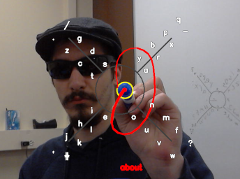

AirPen
Combining OpenCV object recognition and the 8pen interface to allow wireless text input with any object via webcam.
 Taking 1st place in the 2017 Make - IT - Wright Hackathon, AirPen was a solo project completed with plenty of time to sleep and chat. Yes, those sunglasses are necessary. Even with the brightness low, staring at the screen for 24 hours can seriously strain my eyes after Lasik and sunglasses make a huge difference. The idea for the hackathon was to recreate the 8pen interface but the platform wasn't solidfied until I asked some friends what they though would be interesting. It was either going to be something like this as virtual keyboard, or a bluetooth hardware keyboard with maybe a joystick or accelerometers.